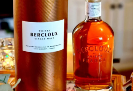

A Real French Terroir Whisky
Born in Charente, in the village and at the distillery of Bercloux which gives it its name, our single malt whisky is the reflection of its terroir and exceptional know-how — the historic Charentais pot still from 1974.
Made from locally grown barley, it is brewed and distilled at home then aged in traditional Bordeaux barrels and Cognac casks. It is distinguished by its finish in Pineau des Charentes barrels which highlights local culture.
First bottle on the spirits market without a label! An elegant bottle, statutory and in tune with the times.
Single Malt Whisky
100% France
40%
100% Unpeated
3 years — Bordeaux & Cognac casks
3–6 months — Pineau des Charentes
Color: Deep with copper reflections.
Nose: Complex — sweet spices, grapes and macadamia nuts.
Mouth: Tasty attack. Unctuous and powerful, racy balance. Vinous body with great length and round tannins.
Finish: Long, lingering on toasted and grilled notes.